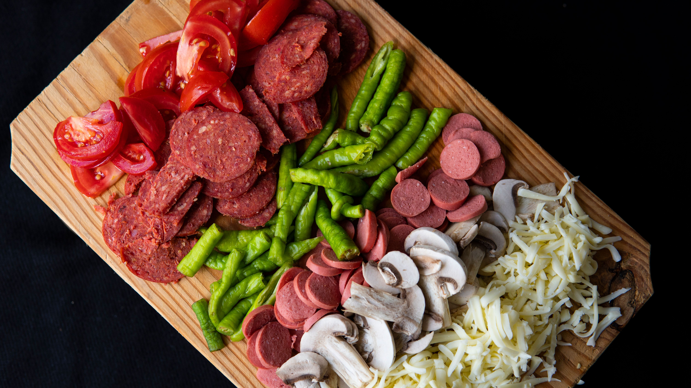

Paso 1
Preparar los ingredientes

Reúne todos los ingredientes necesarios. Asegúrate de que el agua esté tibia (no caliente) para activar correctamente la levadura. Pesa y mide todos los ingredientes con precisión.